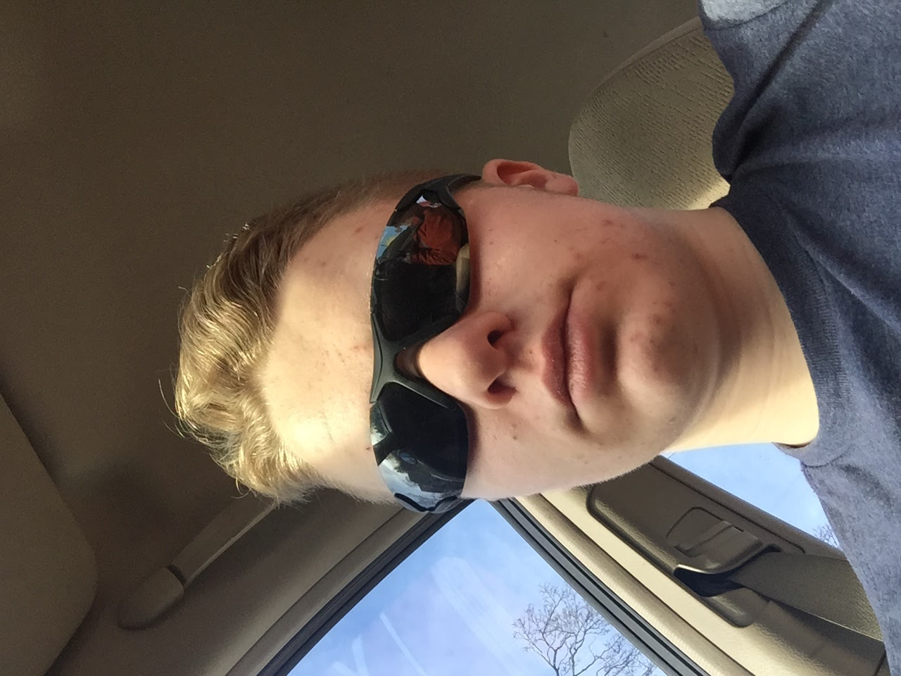

My name is Phoenix Nettesheim, and I live in Mukwonago Wisconsin. I really love playing and watching football. My favorite teams are the Wisconsin Badgers, Green Bay Packers, and the BYU Cougars. My favorite colors are red and blue. I was a programmer on my local middle school's robotics team, which was the first to go to state in my school. I was also the lead programmer next year on our leading and best team. The reason I am in AP computer science, is so that I can get a start on learning how to create more complex programs, as I want to be a meateorologist, and I will need to be able to code and create formulas.
